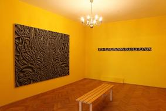
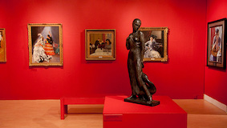
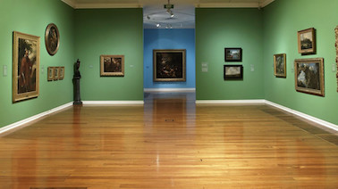
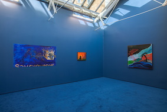
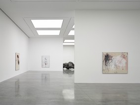

The yellow room contains works relating to the post-war period and offers numerous works belonging to metaphysical painting, synthetic cubism and American modernism.
The red room contains works relating to the origins of contemporary art or relating to the period between 1863 and 1899, the red room exhibits works deriving from expressionism, futurism, cubism and surrealism.
The green room contains works relating to the early twentieth century or between 1900 and 1914, the green room offers works belonging to the expressionism movement and the surrealism movement.
The blue room offers numerous works related to the post-war period, the works in the blue room belong to abstract art, conceptual art and figurative art.
The white room offers the most particular works that belong to the twentieth century such as sculpture and kinetic art.